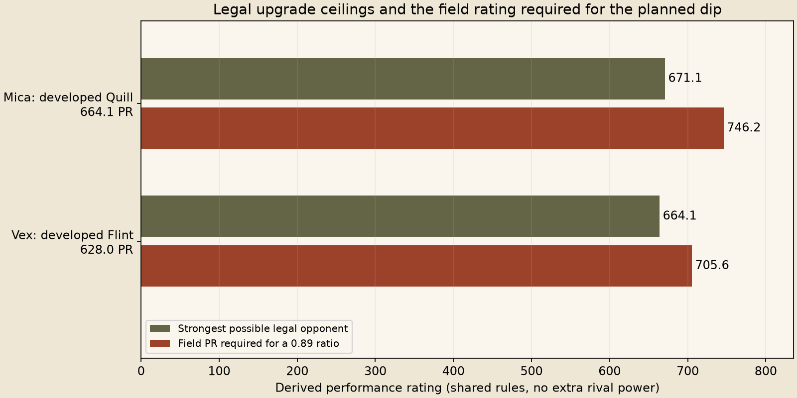
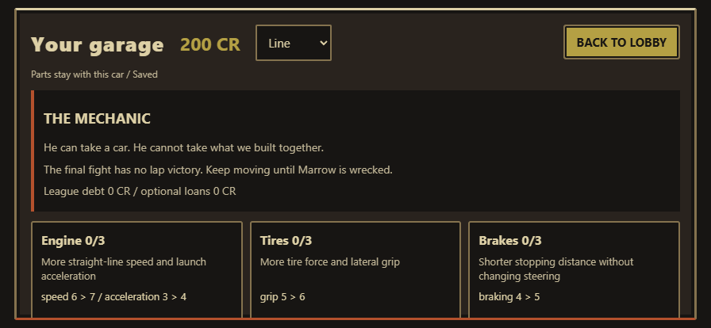
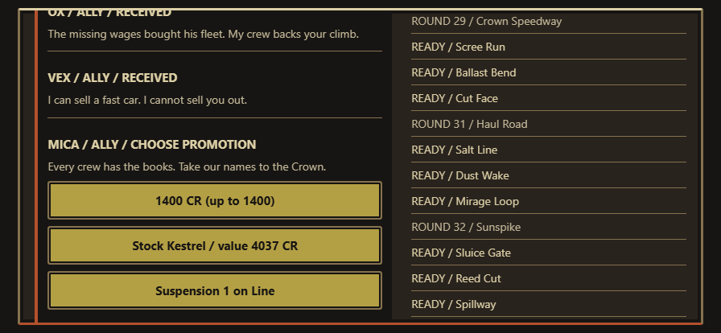

Release cohorts, duel rotations and Q3 before/after. Primary completions fell from 1,292 to 1,099 of 2,000; PR-buyer completions from 541 to 419. Late primary boss ratios improved from 0.9908 / 1.0162 to 0.9385 / 0.9800, but still miss 0.85-0.90. This is not accepted campaign balance. Censored careers remain visible.
The release keeps the original car physics, stat cap of 10 and Marrow 635. It changes prize scales and ally payouts, limits nominal late field targets to 665, and gives the supplied-rig finale an explicit 0.525 ratio basis. The ratio is not a win probability. Both 2,000-career cohorts resample held-out physical outcomes; they are not 4,000 independent full-physics careers.
Exhaustive legal-part ceilings show why money and target edits alone cannot guarantee the planned dip against developed retained cars. Release runtime and complete cohort equivalence: all main-class/resource bytes match the sampled economy runtime, all 34 event hashes and six duel rows replay, and both complete ledger/timeline outputs match exactly. The earlier economy-only run is the same physical dataset, not extra independent evidence.

Loopback desktop game and Chrome, funded diagnostic fixture: cash/car/part claims, guest restriction, narration, wallet ledger, reload persistence and restored cap-10 meters. This is not an earned career or owner approval.


First headroom candidate, Marrow 635 made the duel too one-sided. Second candidate, Marrow 610 restored duel viability and produced 1,267 primary / 236 PR-buyer completions. Its primary boss ratios were 0.8550 / 0.8707 / 0.8765 / 0.8497; the last remains below the lower bound.
The higher 12/16 caps and the 610 Marrow ceiling are not shipped. The same-seed cap control moved Champion class winner share by about 20 percentage points, and PR-policy censoring worsened. Promotion-tier cars are legal at boss entries: zero sampled Elite wins at Mica did not mean the campaign was unwinnable. Complete cohorts supersede that incomplete interpretation.
Exact experimental patch, data and test reproduction; experimental browser checks; experimental upgraded obstacle pairs. The latter finished all 36,000 entries with no wrecks/unresolved, but one recovered 39.93-second progress interval remains a feel concern. It is not production upgrade tuning.
Eleven economy pilots reuse Q3 physics. Twelve paired finale probes retain budget, dispatcher, waiting and mine alternatives; no experimental weapon/decision changes ship. Restoring Q3 prize scales failed exact replay at event 16, so old outcomes were not relabeled. Failed preflights and logs are retained.
Owner story/reward usefulness, driving feel, actual-phone comfort and every Fire TV Stick check remain pending. The reserved Stick was never discovered or accessed. No generated art, registry edits or push.